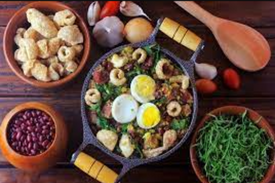
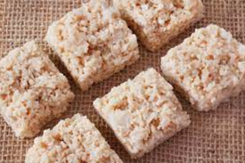

Galinha Caipira
Rendimento médio de 6 porções. Tempo médio de preparo: 90 minutos.
 Feijoada
Feijoada
Rendimento médio de 20 porções. Tempo médio de preparo: 140 minutos.
Strogonoff de Frango
Rendimento médio de 4 porções. Tempo médio de preparo: 35 minutos.

Feijão Tropeiro
Rendimento médio de 8 porções. Tempo médio de preparo: 40 minutos.
Dobradinha
Rendimento médio de 4 porções. Tempo médio de preparo: 60 minutos.
Doce de leite
Rendimento médio de 10 porções. Tempo médio de preparo: 45 minutos.

Cocada
Rendimento médio de 5 porções. Tempo médio de preparo: 40 minutos.